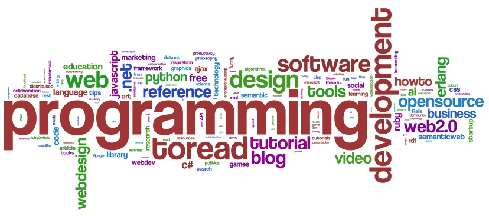

Wordle Play
I've just found a rather cool website called Wordle.
It allows you to enter text and it produces "beautiful word clouds" (to quote the website) – and I happen to agree with them. I used the text of my post on computational creativity and species counterpoint to produce the following:

(click the image to get the full word cloud from the Wordle site – Java required).
You are able to change the colours, fonts and layouts to create some rather funky effects. It is also possible to import the tags from specific users on delicious. Here's a picture of the results for my user (ntoll):
